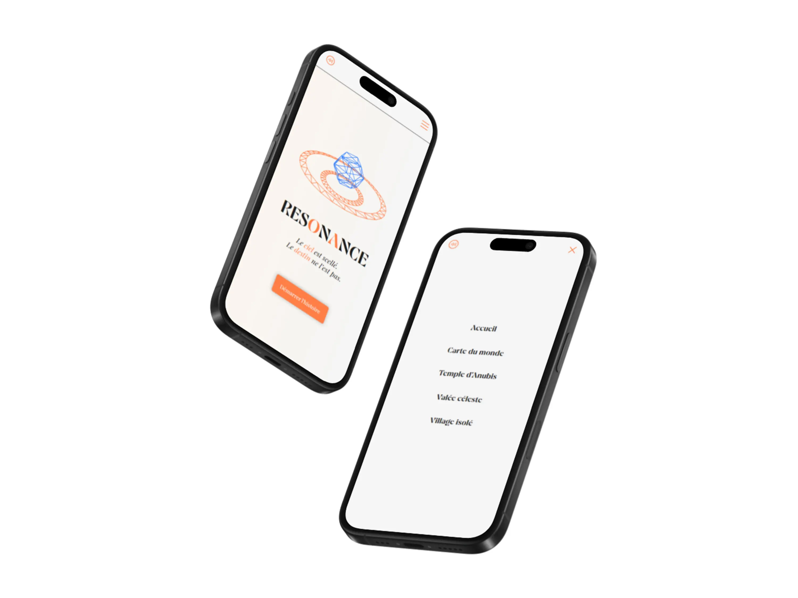
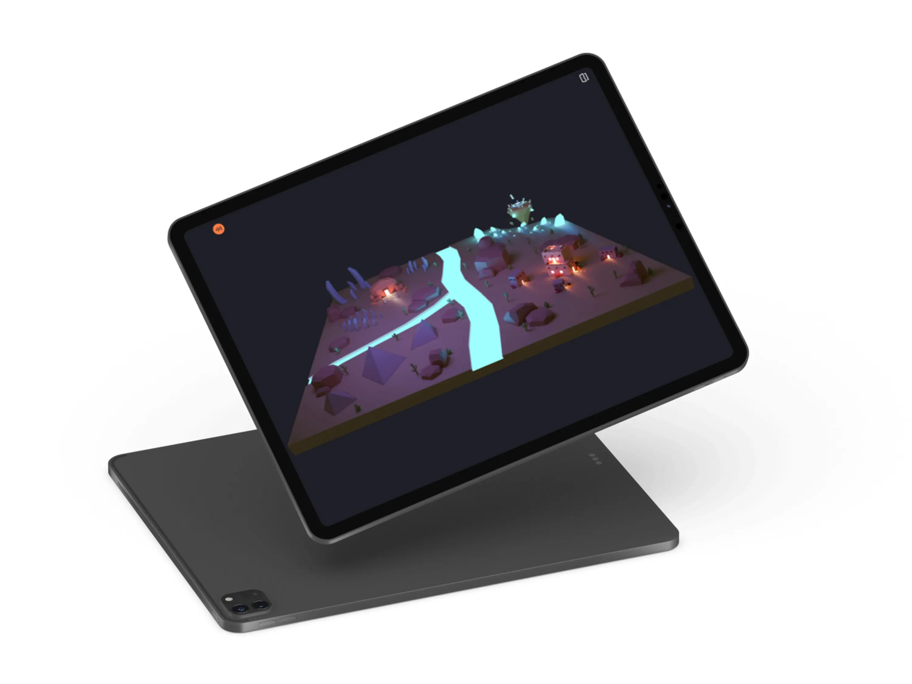
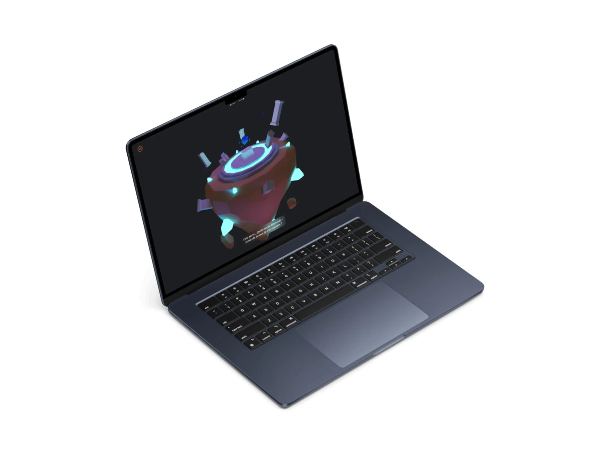
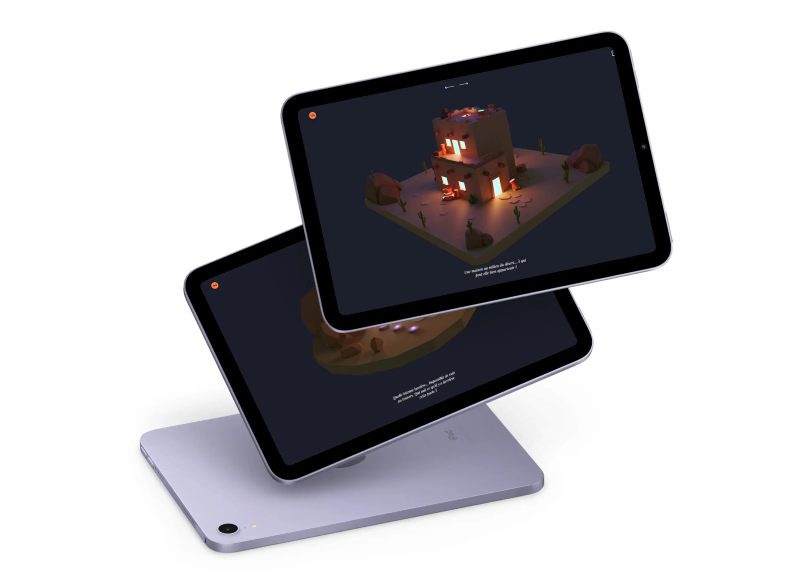

Mise en situation
Premiers pas dans le monde du travail. Trois mois pour faire mes preuves.

Lors de mon cursus à la Haute École Albert Jacquard, j'ai été amené à réaliser un stage de 3 mois en entreprise, pour ma part chez Pixl Agency
Durant ce stage, j'ai créé plusieurs designs de site sur Figma. J'ai aussi appris à utiliser Wordpress et Elementor. J'ai également été en charge de la création d'un site client de A à Z : Delmarcelle Concept.
Phase de recherches
Mon premier site client de A à Z. Un défi à relever !

Avant de commencer à créer quoique ce soit, il me fallait des informations sur mon client. J'ai donc pris quelques minutes à discuter avec lui afin de définir ce dont il avait besoin.
Il avait besoin d'un site assez simple, classe, épuré contenant plusieurs pages. Ce site présenterait ses différents services ainsi qu'un formulaire de contact pour communiquer avec ses clients.
Création du design
Premier site d'agence, voyons ce que ça donne...

Pour l'entièreté du site, je suis parti sur des textes noirs sur fond blanc afin de répondre au côté épuré qu'il m'avait demandé.
Pour les typos, j'en ai choisi trois. La Poppins, la plus globale, la Outfit pour les sous-titres et la PlayFair Display pour les grands titres.
Pour la page d'accueil, j'ai essayé de jouer avec plusieurs images et textes en laissant assez d'espace entre chaque parties.
Pour les pages services, j'ai utilisé le même design pour chacune des pages. Comme ça, je n'avais qu'à changer le contenu en fonction du service demandé.
Développement du site
Une nouvelle manière de créer : Wordpress et Elementor.

Tout le code de mon site tourne principalement autour du ThreeJS et des animations qui l'accompagnent.
J'ai fait en sorte que pour chaque scène 3D (sauf la map), on puisse se déplacer à l'aide de flèches directionnelles et tourner autour de la scène.
Lorsque l'utilisateur clique sur un élément de la scène 3D, un texte explicatif en lien avec le lieu apparaît.
Pour finir, j’ai ajouté de la musique afin d’améliorer l’expérience globale du site.
Autres projets
Envie de découvrir mes autres projets ? Cliquez sur les cartes afin de voir ce qu’elles renferment.
Data Clash
2025

Clash entre différents artistes
Janus
2024

Site critique du streamer ZeratoR